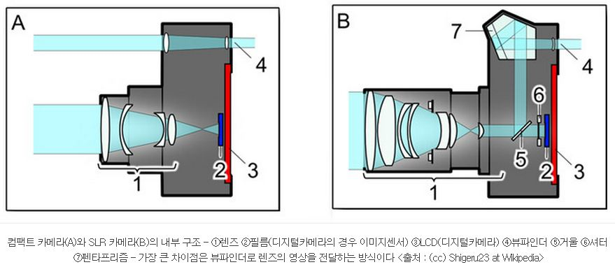

Q) 보급형 디카의 LCD에 display되는 것은 디카 사진용 디텍터의 신호를 실시간으로 display하는 것일까, 다른 디텍터 (reduced secondary)의 신호를 display하는 것일까?
전자라면 디텍터의 full signal을 display하는 것일까, binning 해서 display하는 것일까?
SLR의 장점이라고 주로 설명하는 그림, 보급형 디카와 비교하여

Ref : http://chenjy.tistory.com/1445
WYSIWYG (위지윅)
- SLR
- 전자식 뷰파인더
Ref : http://blog.naver.com/gmrgom?Redirect=Log&logNo=120143046167
- 라이브뷰 LCD
Ref : http://kin.naver.com/open100/detail.nhn?d1id=5&dirId=50102&docId=1374365
미러리스의 단점 : 뷰파인더의 부재로 인한 정밀한 MF포커싱등의 표현력 부족이 발생될 가능성이 크며
추가 악세사리인 전자식뷰파인더를 장착가능하긴 하지만 전자식의 경우 광학식 뷰파인더 대비하여
색상의 왜곡, 노이즈, 조도에따른 피사체인식의 어려움등이 발생함(이미지 결과물엔 영향을 끼치지않아요)
(<--??)
Ref : http://blog.naver.com/gmwf?Redirect=Log&logNo=70114733031
- 광학식 뷰파인더
- 전자식 뷰파인더
(<-- 맞는 말?)
<-- 뭔소리? 이 설명이 맞다면 광학식으로 피사체와 동일한 상황을 봐서 뭐하게?
Partial A) Q1 : 전자가 맞는것 같고
Q2 : 정보 부족